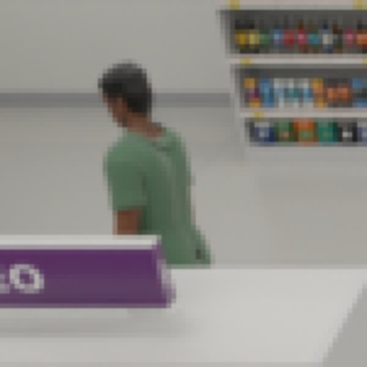
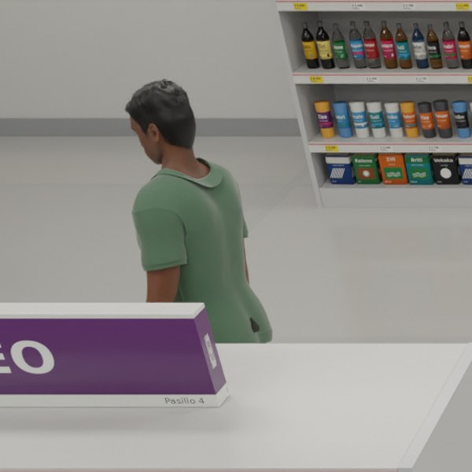

Vigias IA
Sus camaras ya no solo graban. Responden.
Argos contesta preguntas sobre lo que paso. La Reina Roja mira en vivo con su equipo. Todo corre en sus propios servidores: el video no sale a la nube.
Argos.
Preguntele a sus camaras.
Un asistente que entiende espanol de verdad: fechas, camaras, prendas y colores. Busca personas por apariencia, arma recorridos, resume el turno y propone acciones que usted confirma.
Todo su sitio, de un vistazo.
Alertas del dia, criticas por revisar y camaras con ritmo anormal apenas abre Argos.
Preguntele como a una persona.
Escriba o dicte. «¿Quien tenia chaqueta naranja?» basta: Argos entiende la prenda y el color.
Muestra como lo obtuvo.
Cada respuesta dice que consulto y con que criterio. Nada de numeros sin respaldo.
Busca por apariencia en todas las camaras.
Cada candidato trae la camara, la hora y los rasgos que coincidieron. Son candidatos, no identificaciones.
Descarte lo dudoso de un toque.
Parecido alto o medio: el contraluz naranja de un atardecer no es una chaqueta, y Argos lo sabe distinguir.
Siga a la persona por todo el sitio.
Elija un candidato y Argos arma su paso por cada camara, con linea de tiempo, plano y video de cada aparicion.
Buenos dias
Candidatos por apariencia
Recorrido de P12
Briefing de turno
«Ponme al dia» y recibe el parte de relevo: criticos, pendientes y camaras con problemas.
Compare periodos
Esta semana contra la anterior, por tipo de alerta y por camara, con grafico listo.
Triaje de alertas
Falsa alarma, verificada o escalada: por voz o texto.
Dictado por voz, sin nube
El texto aparece mientras habla, a 0,7 s de su voz.
Salud de camaras
Cual se cayo, cual va lenta y desde cuando.
La IA propone. Usted confirma.
Argos prepara la accion y solo su clic la ejecuta. Queda registrado quien confirmo y cuando.
Todo en su servidor.
El modelo de lenguaje, la voz y la busqueda corren en sus equipos. Ninguna imagen ni pregunta sale a internet.
Reina Roja.
Mira con usted.
Vive sobre el video en vivo: narra lo importante, responde lo que usted senala y sigue a una persona de una camara a la siguiente. Se le habla y contesta con la voz de las alarmas.
Todas sus camaras, con lo que importa encima.
Etiquetas discretas sobre el video y una consola que narra lo que vale la pena mirar.
Entre a cualquier camara.
Un toque y la camara ocupa la pantalla, con su narracion propia.
Senale y pregunte.
Encierre algo con el dedo o el mouse. La Reina Roja le dice que es y que esta pasando.
Amplie lo que apenas se ve.
La zona marcada se amplia y se mejora para ver mejor lo que la camara alcanza a captar.
Una persona, todas las camaras.
Marquela una vez. La Reina Roja la reconoce en la siguiente camara, guarda fotos para no perderla y le avisa por donde va.
Hablele como a su equipo.
«Ignora la camara 4 hasta que cambie algo». Entiende, confirma y le avisa si pasa algo distinto.
Reina Roja
· todas las camaras

● Detalle mejoradoY 45 analiticas
que no se distraen.
Hurto, filas, aforo, merodeo, cruce de linea, elementos de proteccion… Cada una explicada con una escena 3D con fisica real.